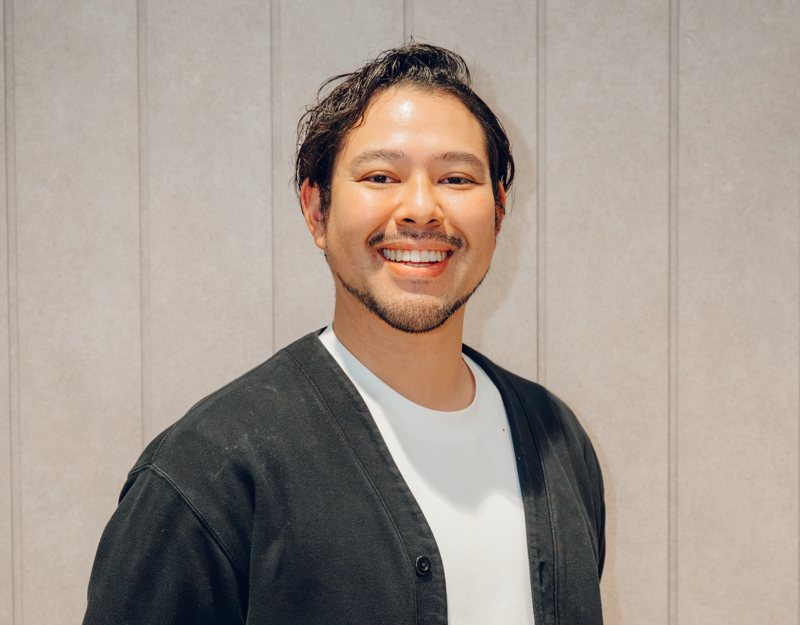

経営責任｜代表取締役
今村 ジョージ
JORGE IMAMURA
IT教育サービスを展開する企業で未経験から異業種に挑戦をしたい人材累計約5000名のキャリア相談及び支援に携わる。加えて、フリーランス紹介をするエージェント領域の経験や中小企業から大手外資系企業まで、アライアンスを通じた商品・サービスの販売促進施策の企画（WEB/イベント）・設計、ディレクションを担当。現在は、国籍や経歴を問わない多様なスキルや背景を持つ人材が企業の実案件を通じて能力を発揮する機会づくりの最大化に取り組む。